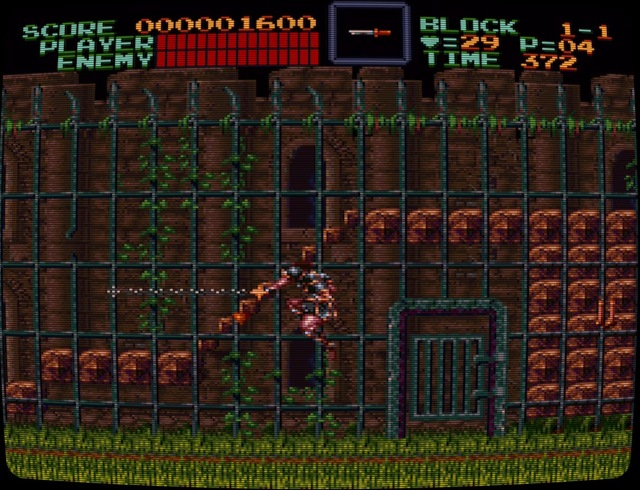
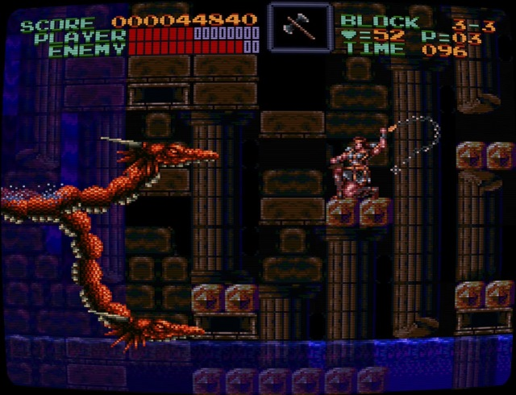

After looking at Contra 3 I take a look at the first Castlevania on the Super Nintendo as we head ever onwards towards the SNES Mini‘s launch. How does Super Castlevania IV hold up?
Super Castlevania IV whipped its way onto the SNES almost a year after the Japanese launch and within six months of both North American and European launches. Like it’s prior entries, Super Castlevania IV is a side-scrolling platformer seeing you take control of Simon Belmont as he whips his way through a variety of undead to take on Dracula himself.

Visually the game is still very appealing, the spritework has aged well and it uses the Super Nintendo’s capabilites to produce some memorable areas and boss fights. Mode 7’s scaling and rotation is used to great effect throughout, especially when it comes to spinning backgrounds and large enemies.
The soundtrack, again by Konami veteran Adachi Masanori, still sounds great with sweeping atmospheric pieces that use motifs and subtle arrangements from prior games tracks to superb effect. From the familiar ‘Simon’s Theme’ and arrangement of the classic ‘Bloody Tears’ to the haunting ‘Chandeliers’ it all fits really well with what’s onscreen.

The game itself in many ways feels like a remake of the first game, very linear like most pre-Symphony of the Night entries it has great pacing throughout with no real lulls in the action. It’s also not a slow game,technical slowdown notwithstanding, its approach to combat is a lot more deliberate and timing based than you’d perhaps expect. That this doesn’t end up making it feel like a slog is testament to the skills of the small dev team.
Compared to Contra III: The Alien Wars it has a much fairer difficulty curve and while it’s definitely challenging towards the end it gets there in small steps rather than just demanding you deal with it. Overall Super Castlevania IV still holds up splendidly and is still worth playing today. It obviously doesn’t have the longevity of the games it would later inspire to form a new portmanteau’d genre with but its legacy is still visible within them.